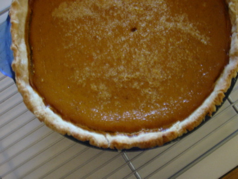

Thanksgiving Dinner was a success this year. We had the opportunity to have dinner with just friends, with family scattered away from us doing other things.
(I think we should institute a Thanksgiving-esque holiday where you get some time off work, have a big meal, but only invite friends over for drama free food and wine. Maybe in February, a week after Valentine’s Day or something.)
Here some pics of dinner and preparation.
Staging and preparing the vittles
Taters and beans ready to go.
Dinner is served.
I did the usual brining technique to prepare the bird this year. My brine is created from a base of apple juice (any old jug of apple juice from the store will work). I add to this about a cup of salt, sliced apples, celery, onions, lemons, bay leaf, pepper corns, and garlic cloves. I brought all this to a boil in a large pot and let it cook until the salt was dissolved and it started to smell good. I took the pot off the heat, and let the mixture cool to room temperature before pouring it over the turkey in a great big bowl. I let this sit in the fridge over night.
Brining greatly reduces the cooking time of the turkey. There’s a science-y explanation that has to do with the salt changing the chemical properties of the meat…blah blah blah. Just keep an eye on the temperature.
I roasted pears along side the bird. They came out soft, sweet, and delicious. They make a good complement to the turkey and look awfully pretty too.